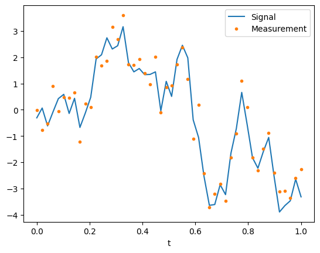
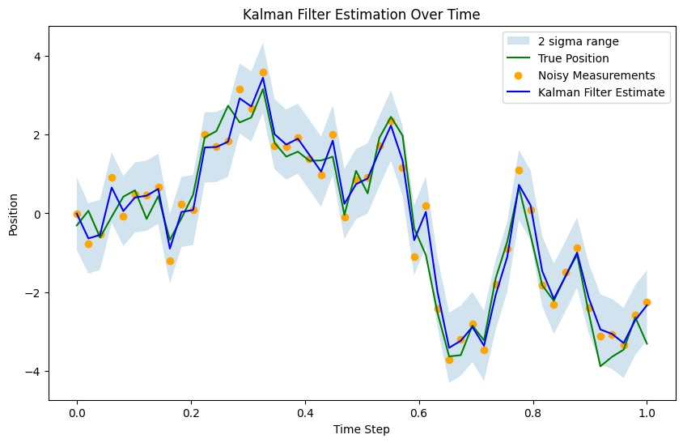

Suppose that we have measurements of the scalar \(y_k\) from the Gaussian random walk model \[\begin{align}
x_{k} & =x_{k-1}+ w_{k-1},\quad & w_{k-1}\sim\mathcal{N}(0,Q), \\
y_{k} & =x_{k}+v_{k},\quad & v_{k}\sim\mathcal{N}(0,R).
\end{align}\]
This very basic system is found in many applications where \(x_k\) represents a slowly varying quantity that we measure directly. The process noise, \(w_k,\) takes into account fluctuations in the state \(x_k.\) The measurement noise, \(v_k,\) accounts for measurement instrument errors. The difference with the previous example, is that here \(x\) varies randomly over the time-steps.
We want to estimate the state \(x_k\) over time, taking into account the measurements \(y_k.\) That is, we would like to compute the filtering density,
We proceed by simply writing down the three stages of the Kalman filter, noting that (as in the previous example) \(F_k =1\) and \(H_k =1\) for this model. We obtain:
Initialization: Define the prior mean \({x}_0\) and prior covariance \({P}_0.\)
Note that this formulation is identical with the previous example, except the nature of the measurements, \(y_k.\)
# generate the GRWimport numpy as npimport matplotlib.pyplot as pltnp.random.seed(1955)# time interval and time-stepT =1N =50dt = T/Nt = np.linspace(0,1,N)# set parameterssig_w =1sig_v =0.5F =1Q = sig_w**2H =1R = sig_v**2# initializex0 =0P0 =1# simulate dataX = np.zeros(N)Y = np.zeros(N)x = x0# loop over timefor j inrange(N): w = sig_w*np.random.randn() x = F*x + w; y = H*x + sig_v*np.random.randn() X[j] = x Y[j] = y# plot the GRWplt.plot(t, X, t, Y, '.')plt.legend(['Signal', 'Measurement'])plt.xlabel('t')plt.show()

5.1 Implementation of the KF
Here is a straigthforward, matrix-based implementation of teh KF that follows exactly the thoeretical formulation above.
For more generality, below we will rewrite the Kalman filter as a class.
# scalar KFx = x0P = P0# Allocate space for estimated positionestimated_positions = np.zeros(N)estimated_covariance = np.zeros(N)# Kalman Filter Loopfor k inrange(N):# Predict x = F*x P = F*P*F + Q # Correct d = Y[k] - H*x S = H*P*H + R K = P*H / S x = x + K*d P = P - K*S*K# Store the filtered position and covariance estimated_positions[k] = x estimated_covariance[k] = P# Plot the true positions, noisy measurements, and the Kalman filter estimates# and the 2 sigma upper and lower analytic population boundslower_bound = estimated_positions -1.96*np.sqrt(estimated_covariance)upper_bound = estimated_positions +1.96*np.sqrt(estimated_covariance)fig, ax = plt.subplots(1, figsize=(10,6))ax.fill_between(t, lower_bound, upper_bound, facecolor='C0', alpha=0.2, label='2 sigma range')ax.legend(loc='upper left')ax.plot(t, X, label='True Position', color='green')ax.scatter(t, Y, label='Noisy Measurements', color='orange', marker='o')ax.plot(t, estimated_positions, label='Kalman Filter Estimate', color='blue')plt.xlabel('Time Step')plt.ylabel('Position')plt.title('Kalman Filter Estimation Over Time')plt.legend()plt.show()

5.2 Implementation of KF as a class
For more generality, we rewrite the Kalman filter as a class.
class KalmanFilter:""" An implementation of the classic Kalman Filter for a SCALAR linear dynamic systems. The Kalman Filter is an optimal recursive data processing algorithm which aims to estimate the state of a system from noisy observations. Attributes: F (np.ndarray): The state transition matrix. B (np.ndarray): The control input marix. H (np.ndarray): The observation matrix. u (np.ndarray): the control input. Q (np.ndarray): The process noise covariance matrix. R (np.ndarray): The measurement noise covariance matrix. x (np.ndarray): The mean state estimate of the previous step (k-1). P (np.ndarray): The state covariance of previous step (k-1). """def__init__(self, F=None, B=None, H=None, Q=None, R=None, x0=None, P0=None):""" Initializes the Kalman Filter with the necessary matrices and initial state. Parameters: F (np.ndarray): The state transition matrix. B (np.ndarray): The control input marix. H (np.ndarray): The observation matrix. u (np.ndarray): the control input. Q (np.ndarray): The process noise covariance matrix. R (np.ndarray): The measurement noise covariance matrix. x0 (np.ndarray): The initial state estimate. P0 (np.ndarray): The initial state covariance matrix. """self.F = F # State transition matrixself.B = B # Control input matrixself.u = u # Control inputself.H = H # Observation matrixself.Q = Q # Process noise covarianceself.R = R # Measurement noise covarianceself.x = x0 # Initial state estimateself.P = P0 # Initial estimate covariancedef predict(self):""" Predicts the state and the state covariance for the next time step. """self.x =self.F @self.x +self.B @self.uself.P =self.F @self.P @self.F.T +self.Q#return self.xdef update(self, z):""" Updates the state estimate with the latest measurement. Parameters: z (np.ndarray): The measurement at the current step. """ y = z -self.H @self.x S =self.H @self.P @self.H.T +self.R K =self.P @self.H.T @ np.linalg.inv(S)self.x =self.x + K @ y I = np.eye(self.P.shape[0])self.P = (I - K @self.H) @self.P
# generate the GRWimport numpy as npimport matplotlib.pyplot as pltnp.random.seed(1955)# time interval and time-stepT =1N =50dt = T/Nt = np.linspace(0,1,N)# set parameterssig_w =1sig_v =0.5F =1Q = sig_w**2H =1R = sig_v**2# initializex0 =0P0 =1# simulate dataX = np.zeros(N)Y = np.zeros(N)x = x0# loop over timefor j inrange(N): w = Q*np.random.randn() x = F*x + w; y = H*x + sig_v*np.random.randn() X[j] = x Y[j] = y# ready to execute the KF...# Kalman Filter InitializationF = np.array([[1]]) # State transition matrixB = np.array([[0]]) # No control inputu = np.array([[0]]) # No control inputH = np.array([[1]]) # Measurement functionQ = np.array([[sig_w**2]]) # Process noise covarianceR = np.array([[sig_v**2]]) # Measurement noise covariancex0 = np.array([[0]]) # Initial state estimateP0 = np.array([[1]]) # Initial estimate covariancekf = KalmanFilter(F, B, H, Q, R, x0, P0)# Allocate space for estimated positionestimated_positions = np.zeros(N)# Kalman Filter Loopfor k inrange(N):# Predict kf.predict() # Correct measurement = np.array([[Y[k]]]) kf.update(measurement) # Store the filtered position estimated_positions[k] = np.ndarray.item(kf.x[0])# Plot the true positions, noisy measurements, and the Kalman filter estimatesplt.figure(figsize=(10, 6))plt.plot(t, X, label='True Position', color='green')plt.scatter(t, Y, label='Noisy Measurements', color='red', marker='o')plt.plot(t, estimated_positions, label='Kalman Filter Estimate', color='blue')plt.xlabel('Time Step')plt.ylabel('Position')plt.title('Kalman Filter Estimation Over Time')plt.legend()plt.show()